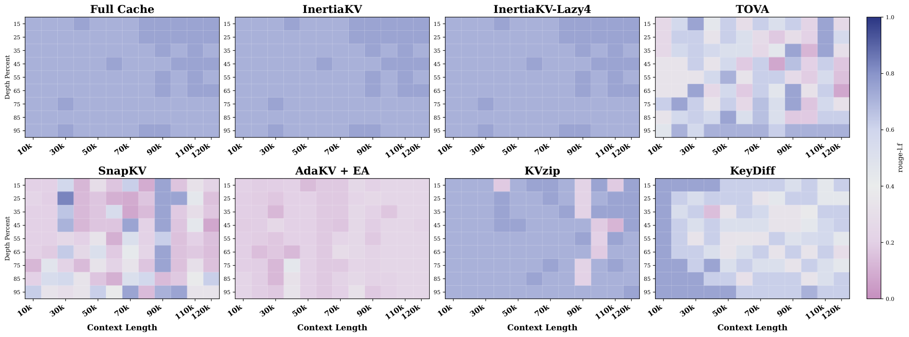

Figure A.7: Comparison of precipitation CRPS skill for WN3 running on an hourly and 6-hourly update cycle under an assumed 7-hour operational pipeline latency. At 01, 07, 13, and 1...
Fig. 1 : Results of RESPLE (LIO), DR-LRIO (LIO + radar), and Ours in degenerate environments: (a) Airfield1 and (b) BikeTunnel2 . While RESPLE is unstable in Airfield1 and fails in...
Residual Optimal Transport-Based Experts Collaboration Towards Modality-Aware Infrared-Visible Object Detection
2026-09-03strong_recommend
【P2】原始领域是红外—可见光检测；可迁移模块是跨/单模态专家按可用性激活，以及残差驱动自步熵最优传输对齐；对应 RGB/Event 缺失、谱差与按样本可靠性。专家和 OT 增加训练/推理开销，但自步更新减轻额外优化；风险是语义错配被逐步强化。最小实验：在 TriPro 上比较固定加和、专家路由和 OT 对齐的 mA、ECE、显存与延迟。
作者 / 机构
Yue Zhao, Hua Yu, Yukun Zhao, Yuzhi Zhang, Maoguo Gong, Xin Mei, Zhuping Hu, Yanchi Li, A. K. Qin
【P2】原始领域是红外—可见光检测；可迁移模块是跨/单模态专家按可用性激活，以及残差驱动自步熵最优传输对齐；对应 RGB/Event 缺失、谱差与按样本可靠性。专家和 OT 增加训练/推理开销，但自步更新减轻额外优化；风险是语义错配被逐步强化。最小实验：在 TriPro 上比较固定加和、专家路由和 OT 对齐的 mA、ECE、显存与延迟。
研究背景
由原简报的核心问题、选取理由和相关性整理，不替代原文背景综述。
双传感器检测常假设模态始终完整，固定融合在任一路缺失时崩溃，异质谱分布还会产生不可靠配对。
从本日报的选取理由看，【P2】原始领域是红外—可见光检测；可迁移模块是跨/单模态专家按可用性激活，以及残差驱动自步熵最优传输对齐；对应 RGB/Event 缺失、谱差与按样本可靠性。专家和 OT 增加训练/推理开销，但自步更新减轻额外优化；风险是语义错配被逐步强化。最小实验：在 TriPro 上比较固定加和、专家路由和 OT 对齐的 mA、ECE、显存与延迟。
Fig. 2: Framework of FlexibleFusion. (a) Visible and infrared images are passed through the dual-branch feature extraction backbone and the DINO detector under a modality-aware dro...
Figure 2: Architecture of GeoDistill. A shared encoder forms a four-level appearance pyramid. During training, Depth Anything V2 supervises the geometry branch at the prediction, f...
Figure 3 : Overview of the proposed multimodal architecture for affect recognition in VR. The image branch (top) processes lower-face video frames using a ResNet backbone, projecti...
排序保持和时间聚合分别怎样影响压缩质量与实际评分开销？
对当前主题的关键意义在于：原始领域是 KV cache；模块是 EMA 与周期刷新；对应流式评分稳定和开销。可降评分算力；风险是突变滞后。最小实验比较不同刷新周期的召回、显存、吞吐和延迟。
方法与关键创新

Figure 8: Auxiliary needle-in-a-haystack heatmap on Llama-3.1-8B using ROUGE-L-F (12 context lengths × \times 9 depths). Full Cache is shown as a reference; compressed methods use ...
Figure 1: Motivation of our LatentStream : paradigm comparison of memory-based and retrieval-based methods with our retrieve-and-internalize method LatentStream .
Figure 2: Overview of VT-Contrast. For each input video, we construct an anchor view, an order-preserving positive view, and temporal counterfactual negative views. A shared VideoL...
选择晚层末帧视觉 token，以 Kendall tau 距离标定同视频重排反事实的对比强度，无需修改推理架构。
阅读时需要把方法设计与主要结果一起看：摘要报告在多个时间理解 benchmark 上整体提升且无推理额外成本；代码已公开。
![Figure A.7: Comparison of precipitation CRPS skill for WN3 running on an hourly and 6-hourly update cycle under an assumed 7-hour operational pipeline latency. At 01, 07, 13, and 19 UTC issue times (shown in bold), both setups retrieve the identical nominal forecast (e.g., the 00 UTC run when queried at 07 UTC), resulting in identical skill. The performance divergence peaks at 00, 06, 12, and 18 UTC issue times, where the hourly model benefits from a 5-hour freshness advantage (e.g., retrieving a 05 UTC run at 12 UTC versus the 00 UTC run required by the 6 hourly model).](../assets/figures/62cd962050be1d02.png)
![Figure 3 : Overview of the proposed multimodal architecture for affect recognition in VR. The image branch (top) processes lower-face video frames using a ResNet backbone, projecting features into a 128-D embedding. The EMG branch (bottom) encodes signals from seven facial muscles into a RBF kernel matrix, which is then flattened and projected into a 128-D space. Both embeddings are concatenated and classified through fully connected layers into one of seven emotion categories. The modular design allows for the exchange of individual components: image backbones can be replaced by more modern encoding architectures (e.g., MobileNetv4 Qin et al. (2024) , Vision Transformer Dosovitskiy et al. (2020) , Vision Mamba Zhu et al. (2024) ); the EMG branch can utilize handcrafted features or direct post-processed signals; and additional sensor modalities can be incorporated. Similarly, the classifier head can be adapted to experiment with different fusion strategies or architectures.](../assets/figures/3034899292179cb2.png)